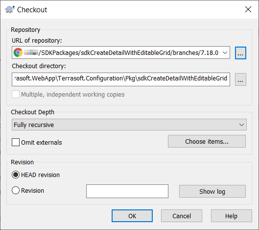
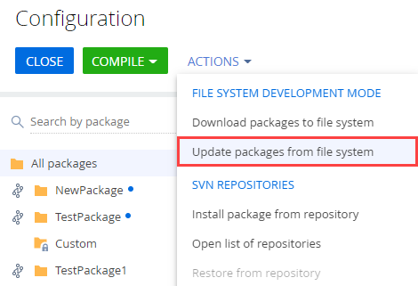
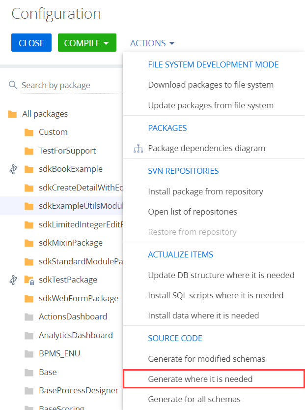

В пакете содержится функциональность детали с редактируемым реестром.
Creatio предоставляет возможность установить существующий пакет из SVN в режиме разработки в файловой системе автоматически и вручную.
Последовательность действий при ручной установке пакета:
- Установить пакет в файловую систему.
- Установить пакет в приложение.
- Выполнить генерацию исходных кодов.
- Скомпилировать изменения.
- Обновить структуру базы данных.
- Установить SQL-сценарии и привязанные данные (опционально).
Последовательность действий при автоматической установке пакета:
- Включить автоматическое применение изменений.
- Установить пакет в файловую систему.
- Установить пакет в приложение.
Вручную установить пакет из SVN в режиме разработки в файловой системе
1. Установить пакет в файловую систему
Чтобы установить пакет в файловую систему:
- В каталоге приложения ...\Terrasoft.WebApp\Terrasoft.Configuration\Pkg создайте каталог, название которого совпадает с названием пакета.
- Выгрузите (команда SVN Checkout...) созданный на предыдущем шаге каталог из хранилища в каталог пакета в файловой системе.
- Укажите адрес хранилища, по которому размещено содержимое пакета, и каталог для выгрузки содержимого пакета.

Название каталога для выгрузки содержимого пакета должно совпадать с названием пакета.
После выгрузки в каталоге ..\Terrasoft.WebApp\Terrasoft.Configuration\Pkg будет создана рабочая копия пакета.
2. Установить пакет в приложение
Чтобы установить пакет в приложение:
- Перейдите в дизайнер системы по кнопке
 .
. - В блоке Конфигурирование разработчиком (Admin area) перейдите по ссылке Управление конфигурацией (Advanced settings).
- На панели инструментов в группе действий Разработка в файловой системе (File system development mode) выберите Обновить пакеты из файловой системы (Update packages from file system).

В результате пакет будет добавлен в приложение.
Отсутствие названия репозитория в названии пакета свидетельствует о том, что все изменения могут быть зафиксированы в репозитории только из файловой системы.
3. Выполнить генерацию исходных кодов
Чтобы выполнить генерацию исходных кодов:
- На панели инструментов в группе действий Исходный код (Source code) выберите Сгенерировать для требующих генерации (Generate where it is needed).

4. Скомпилировать изменения
Чтобы скомпилировать изменения, на панели инструментов нажмите Компилировать (Compile).
Необходимость обновления структуры базы данных, установки SQL-скриптов и привязанных данных отображается в колонке Статус (Status) рабочей области раздела Конфигурация (Configuration).
5. Обновить структуру базы данных
Чтобы обновить структуру базы данных, на панели инструментов в группе действий Актуализировать элементы (Actualize items) выберите Обновить структуру БД для требующих обновления (Update DB structure where it is needed).
6. Установить SQL-сценарии и привязанные данные (опционально)
Если пакет содержит привязанные SQL-сценарии или данные, то необходимо выполнить соответствующие действия для их выполнения или установки.
После установки в приложении станет доступна реализованная в пакете функциональность. В нашем примере это функциональность детали с редактируемым реестром.
Для отображения примененных изменений может понадобиться обновление страницы с очисткой кэша.
Автоматически установить пакет из SVN в режиме разработки в файловой системе
1. Включить автоматическое применение изменений
Чтобы включить автоматическое применение изменений, в файле ..\Terrasoft.WebApp\Web.config установите значение true для ключей элемента <appSettings>:
- AutoUpdateOnCommit — ключ отвечает за автоматическое обновление пакетов из хранилища SVN перед их заливкой. Если для этого ключа установлено значение false, то перед заливкой в хранилище SVN приложение предупредит пользователя о необходимости обновления, если схемы пакета были изменены.
- AutoUpdateDBStructure — ключ отвечает за автоматическое обновление структуры базы данных.
- AutoInstallSqlScript — ключ отвечает за автоматическую установку SQL-сценариев.
- AutoInstallPackageData — ключ отвечает за установку привязанных данных.
Затем выполните шаги 1—2 последовательность действий пункта Вручную установить пакет из SVN в режиме разработки в файловой системе.
Настроить взаимодействие с хранилищем SVN (опционально)
Creatio позволяет настроить взаимодействие с хранилищем SVN как из раздела Конфигурация (Configuration), так и из файловой системы.
Чтобы настроить взаимодействие с хранилищем SVN:
- Перейдите в дизайнер системы по кнопке .
- В блоке Конфигурирование разработчиком (Admin area) перейдите по ссылке Управление конфигурацией (Advanced settings).
- Установите пакет из хранилища SVN. Подробная инструкция содержится в статье Контроль версий в Creatio IDE.
- Выгрузите пакет в файловую систему. Подробная инструкция содержится в статье Настроить Creatio для работы в файловой системе.
Затем выполните шаги 3—6 последовательность действий пункта Вручную установить пакет из SVN в режиме разработки в файловой системе.